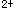

A.尼莫地平
B.硝苯地平
C.氨氯地平
D.地尔硫
E.尼群地平
参考答案：B
题目解析：硝苯地平是治疗变异型心绞痛的首选药。
A.延长APD，阻滞Na内流
B.缩短APD，阻滞Na内流
C.延长ERP，促进K外流
D.缩短APD，阻断β受体
E.缩短ERP，阻断α受体
参考答案：A
题目解析：Ⅲ类为延长动作电位时程药（延长APD，阻滞Na内流），有胺碘酮、索他洛尔等。
A.奎尼丁
B.苯妥英钠
C.维拉帕米
D.普萘洛尔
E.利多卡因
参考答案：C
C.利多卡因
D.胺碘酮
E.普鲁卡因胺
B.地高辛
C.普萘洛尔
参考答案：E
A.阿托品
B.异丙肾上腺素
C.苯妥英钠
D.肾上腺素
E.氯化钾
A.心室颤动
B.室性期前收缩
C.室上性心动过速
D.强心苷引起的室性心律失常
E.心肌梗死所致的室性早搏
A.阻断心肌β受体
B.降低窦房结的自律性
C.降低普肯耶纤维的自律性
D.治疗量就延长浦氏纤维的有效不应期
E.延长房室结的有效不应期
参考答案：D
A.是窄谱抗心律失常药
B.能缩短普肯耶纤维的动作电位时程和有效不应期
C.对传导速度的作用，受细胞外液K浓度的影响
D.对心肌的直接作用是抑Na内流，促K外流
E.治疗剂量就能降低窦房结的自律性
A.钠通道
B.钙通道
C.镁通道
D.氯通道
E.钾通道
B.利多卡因
C.普罗帕酮
E.维拉帕米
题目解析：抗心律失常药物：①Ⅰ类：钠通道阻滞剂，ⅠA类适度阻滞钠通道，如奎尼丁等药；ⅠB类轻度阻滞钠通道，如利多卡因等药；ⅠC类明显阻滞钠通道，如普罗帕酮等药。②Ⅱ类：肾上腺素受体阻断剂，代表性药物为普萘洛尔。③Ⅲ类：选择性延长复极过程，如胺碘酮。④Ⅳ类：钙拮抗药，阻滞钙通道而抑制Ca内流，代表性药物有维拉帕米。故选C。
A.胺碘酮
B.索他洛尔
C.美西律
D.奎尼丁
E.普罗帕酮
A.三磷酸腺苷
B.西地兰
D.阿托品
E.异丙肾上腺素
题目解析：心力衰竭合并快速心房颤动的患者应该及时控制其心室率，保证心室充盈，首选洋地黄类药物，因为洋地黄类药物有正性肌力（加强心收缩力）、负性频率（减慢心率）、负性传导（减慢房室结传导）的作用，从而缓解心功能不全的症状，房颤得到控制，故选B。
题目解析： ①心力衰竭合并快速心房颤动的患者应该及时控制其心室率，保证心室充盈，首选洋地黄类药物，因为洋地黄类药物有正性肌力（加强心收缩力）、负性频率（减慢心率）、负性传导（减慢房室结传导）的作用，从而缓解心功能不全的症状，房颤得到控制，故9题选B。②毛花苷C（西地兰）属于洋地黄类药物。③普罗帕酮属于钙通道阻滞剂，能降低浦肯野纤维及心室肌的自律性，减慢传导速度，另外有弱的P受体阻断作用，有轻度负性肌力作用，因此适用于室上性及室性早搏、心动过速及预防综合征合并心动过速或心房纤颤者，可作为频发室性期前收缩的首选治疗药。故10题选C。
B.普鲁卡因胺
微信关注